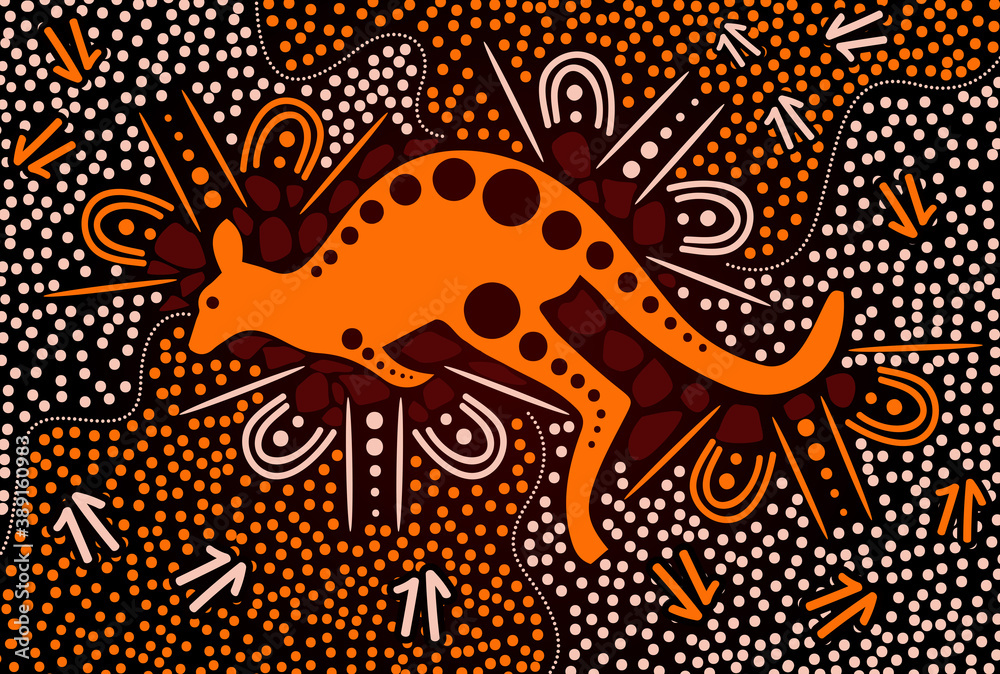

Updates from the development group and faculties
Jun 21, 2023 By Oliver Wainwright
Exploring the Biodiversity Frontier: The Biology Faculty in the
Spotlight
Learn how the University of Sydney's Biology Faculty is making
groundbreaking strides in the field of biology and environmental
sciences. This article showcases the faculty's latest research,
projects, and contributions to a sustainable future.
Explore more →

Aug 30, 2023 By Eleanor Hawthorne
Preserving Heritage: The Rich Tapestry of Australian Aboriginal
Culture
Uncover the vibrant and diverse culture of Australia's First
Nations. This article delves into the profound history,
traditions, and contemporary expressions of Australian Aboriginal
culture, highlighting the ongoing efforts to preserve and
celebrate this unique heritage.
Explore more →
Nov 02, 2023 By Benjamin Thistlewood
Design Excellence Shines: Highlights from the Australian Design
Awards
Experience the pinnacle of Australian design innovation as we
delve into the winners and standout designs from the Australian
Design Awards. This article showcases the remarkable talents and
creative achievements of Australian designers across various
industries.
Explore more →
All your questions, answered.
Frequently Asked Questions
What is the University of Sydney Blocks Design System, and why should
I use it?
The University of Sydney Blocks Design System is a comprehensive
framework that provides pre-designed blocks, components, and templates
for web design. It offers consistency, efficiency, and a user-centric
approach, making it ideal for creating visually appealing and functional
websites while maintaining the university's brand identity.
View design examples →
Can I customise the design system to suit my specific project needs?
Absolutely! The design system is flexible, allowing you to customize and
adapt its elements to match your project's requirements. You can modify
colors, typography, and other design components to align with your
unique vision.
Is the design system suitable for both novice and experienced
designers and developers?
Yes, the design system caters to a wide range of users. Seasoned
professionals will appreciate its advanced features, while beginners can
take advantage of the system's user-friendly components and detailed
documentation.
How does the design system ensure my website's performance and
responsiveness?
The Blocks Design System is designed with performance in mind. It
incorporates best practices for web development and responsive design,
ensuring that your website remains fast, scalable, and adaptive across
various devices and screen sizes.
Can I customise the design system to suit my specific project needs?
Yes, collaboration is a core feature. Teams can work together
seamlessly, utilizing shared design components and a common design
language. This encourages efficient project development and enhances
communication among team members.
Are there ongoing updates and support for the design system?
Yes, the University of Sydney is committed to providing regular updates
and support for the design system. This ensures that you have access to
the latest features, bug fixes, and improvements, keeping your projects
up-to-date and secure.
Can I access training or resources to help me get started with the
design system?
Certainly! The University of Sydney provides extensive documentation,
tutorials, and training resources to help you master the design system.
You can quickly get up to speed and maximize the system's potential for
your projects.